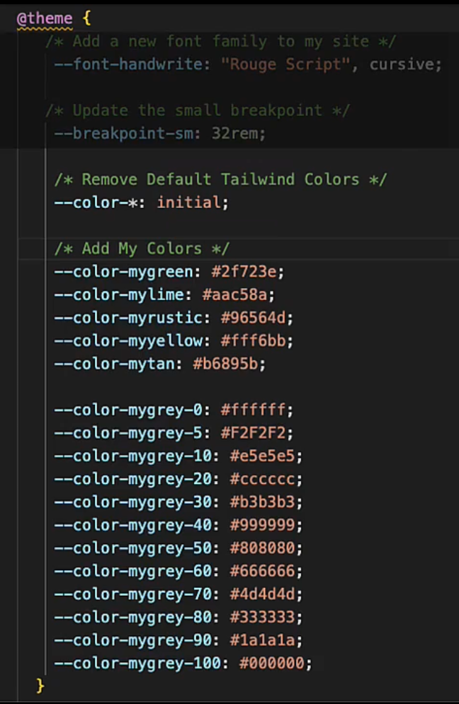
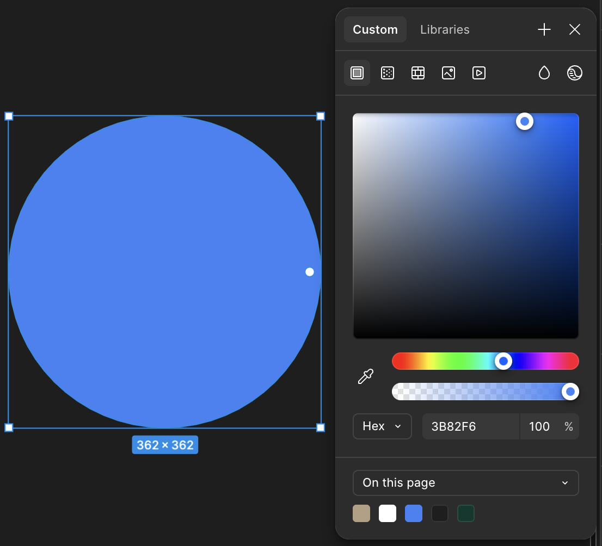

Tailwind Customization Demo
Tailwind comes with the following 3 built-in font families:
This is the default sans-serif font family.
This is the default serif font family.
This is the default monospace font family.
This is the custom font family.
Steps for a font override:
Add or import your custom font into the head of your project
Open your tailwind.config.js file.
In the theme’s extend section, define or override a font family.
Use the new font family class in your HTML or components.
Breakpoint Overrides
Tailwind comes with 5 built-in media query Breakpoints:
Base (0px+): Always visible
You can override any of these if they are not breaking where you would like by adding to the source css file. In this example I am changing the small break point from 40rem (640px) to 32rem (512px).
Color Overrides
Tailwind comes with a total of 220 built-in colors:
Here's how we can override those:
Find your preferred custom hex value
Open your tailwind.config.js file. In the theme’s extend section, define your primary, secondary, accent, and or custom colors
Example of a custom color palette:
#3B82F6
Primary
#10B981
Secondary
#F59E0B
Accent
#8B5CF6
Custom